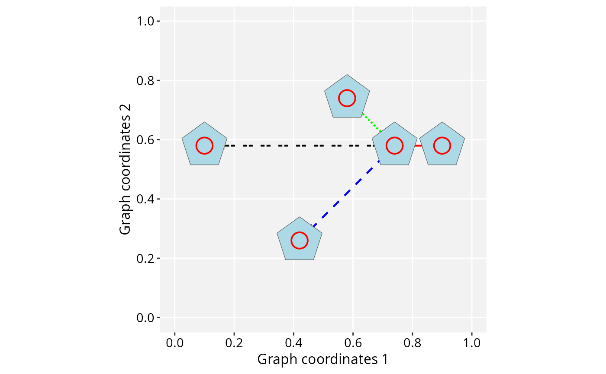

Two related operations for keeping an sfc geometry column
attached to a GraphSpace's nodes in registration with the node
coordinates, for two different situations.
Usage
# S4 method for class 'GraphSpace'
normalizeGeometry(gs, name = "geometry", verbose = TRUE)
# S4 method for class 'GraphSpace'
fitGeometry(
gs,
name = "geometry",
use_node_size = TRUE,
persist = TRUE,
verbose = TRUE
)Arguments
- gs
A
GraphSpaceobject.- name
Character. Name of the geometry column to operate on.
- verbose
Logical. Whether to report progress messages.
- use_node_size
Logical. If
TRUE(the default),fitGeometry()also rescales each geometry to match its node'snodeSize. IfFALSE, only repositioning happens, each feature keeps its current size.- persist
Logical; whether the 'fitGeometry' transformation persists through re-normalization. Defaults
TRUE.
Details
normalizeGeometry is for geometry that is already spatially
meaningful, with its own coordinates genuinely correspond to the nodes
(e.g. real cell-segmentation boundaries) and only needs realigning
to the current, normalized node frame. It fits a linear regression
between the geometry's centroids and the node coordinates and rescales
the geometry accordingly, warning if the fit is poor (the geometry did
not, in fact, scale linearly with the nodes).
fitGeometry is for geometry that is not yet spatially
related to the nodes, as arbitrary shapes used for node markers. It
repositions every shape so its centroid sits exactly at its node's
coordinates and, when use_node_size = TRUE, also rescales
each shape so its diameter matches nodeSize.
Both require gs to already be normalized (see
normalizeGraphSpace), and both operate on a single named
geometry column, leaving any other geometry columns untouched.
Online examples
For more information and examples, see the online tutorial:
https://sysbiolab.github.io/RGraphSpace/articles/geometries.html
Examples
if (requireNamespace("sf", quietly = TRUE)) {
data('gtoy1', package = 'RGraphSpace')
gs <- normalizeGraphSpace(GraphSpace(gtoy1))
# Set different node sizes to test the geometry fitting
gs$nodeShape <- 1
gs$nodeSize <- seq_len(gs_vcount(gs)) * 5
# fitGeometry(): fit arbitrary shapes to the graph layout,
# positioning them at the nodes and scaling to nodeSize
gs_geometry(gs) <- sfshape_ngons(n = gs_vcount(gs))
gs <- fitGeometry(gs)
ggplot(gs) +
geom_edgespace() +
geom_nodespace(colour = "red") +
geom_sf(aes(geometry = geometry), fill = "lightblue") +
theme_gspace_coords(is_norm = TRUE)
# normalizeGeometry(): shapes already in raw node coordinates,
# realigned to the normalized node frame
raw <- getGraphSpace(gs, "coords")
outlines <- sf::st_sfc(Map(sfshape_ngon, raw$x, raw$y, radius = 1))
gs_geometry(gs, name = "outline") <- outlines
gs <- normalizeGeometry(gs, name = "outline")
ggplot(gs) +
geom_edgespace() +
geom_sf(aes(geometry = outline), fill = "lightblue") +
geom_nodespace(colour = "red", size = 5) +
theme_gspace_coords(is_norm = TRUE)
}
#> Validating the 'igraph' object...
#> Ignoring graph-level attributes: 'name', 'mode', 'center'
#> Creating a 'GraphSpace' object...
#> Normalizing node coordinates to graph space...
#> Fitting 'geometry' geometry to node size...
#> Fitting 'geometry' geometry to node coordinates...
#> Normalizing 'outline' coordinates...
